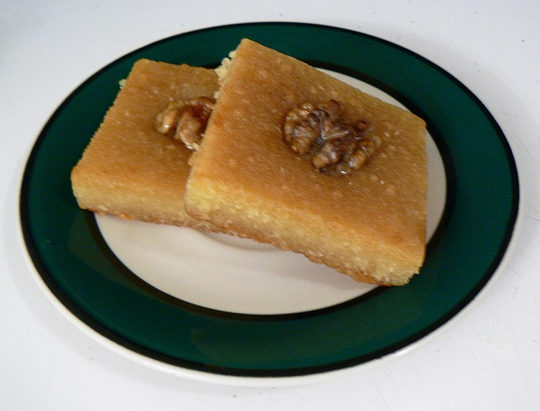

Basbousa - the Lebanese semolina cake
Description
Basbousa (Egyptian Arabic: بسبوسة, romanized: basbūsah) is a sweet, syrup-soaked semolina cake that originated in Egypt. The semolina batter is baked in a sheet pan,[3] then sweetened with orange flower water, rose water or simple syrup, and typically cut into diamond (lozenge) shapes or squares.

Ingredients
- Semolina
- Coconut
- Plain yougurt
- Sugar
Steps
- Preheat the oven to 350°F/400°F.
- In a large bowl, combine the: semolina, baking soda, baking powder, coconut, sugar and melted butter. Make sure that all the ingredients are well mixed.
- Next, add yogurt and mix in well, your batter will be somewhat dry.
- Cook in the oven for 20-30 minutes, or until golden brown. If you don’t cook it enough, the cake will just fall apart. If you overcook it, it can become hard and crumble as well.